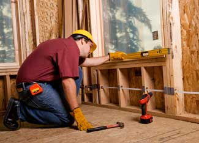

You are about to embark on a great adventure - building your own home! Designing and building your own home gives you the freedom to build what you want, and doing the work yourself can be a rewarding experience that will save you a lot of money in the process. But for many people who dream of building, it’s hard to dismiss one nagging thought: “What if they won’t let me build it?”
“They,” of course, are the folks at the local building department. Complying with building codes can seem intimidating. However, if you think of it as a process, much like the actual building of that dream home, you can get through it one step at a time.
Doing your homework is essential, especially if you plan to build with alternative materials or techniques. Knowing what you need to do and where to find the information you need will help you get your building approved and may even improve your home’s design.
Building codes establish minimum standards for safety and health, and if you decide to build your own home, you’ll need to prove that it meets these standards. There are three main phases of the process:
Where you build matters because building, zoning and other regulations vary from place to place, as do the conditions at and around every building site. Building codes in rural areas tend to be less stringent than those in the suburbs or in town, where buildings are closer together and people are more concentrated.
Today, most city, county and state governments have Web sites with information about their permitting processes, zoning laws and other requirements. They often answer common concerns and provide information on how to get additional help.
Becky Baker, chief building official for Jefferson County, Colo., has advice for owner-builders at the beginning of their process.
“Ideally, have a conceptual meeting with the building department early on to talk about what you want to do, especially if it is unusual,” she says. “You can find out what you need to do and what codes are enforced in the area.” Baker says most building departments provide handouts that describe their processes, fees, minimum requirements for plans and inspections, guidelines for standard construction, and checklists for other approvals needed.
Be sure to ask about requirements specific to owner-builders. Some jurisdictions restrict what work can be done by homeowners, so knowing what the rules are where you intend to build is crucial.
“Although we know we’ll have to spend more time with most owner-builders, we don’t mind,” Baker says. “We start with a premise of respect. We assume that owner-builders want to do the right thing and that we have the same end goals - a safe, affordable, durable, comfortable home.”
Baker has one more piece of advice for those who haven’t yet bought their land, especially for those who want to build with alternative materials or techniques: “Make visiting the building and zoning departments part of your routine, like checking out local schools, before deciding where you want to buy land, build and live. It makes it much more likely that you will get to build what you want to build.”
A checklist from the building department, describing what plans and inspections are needed for a permit, also reveals what the codes cover. Whether you can produce these required plans yourself or will need help with the design or drawings will depend on the complexity of your design, your level of skill and knowledge, and local codes and rules governing when a design professional is required. At a minimum, you typically need:
Some technical design questions can be answered by the building department, but don’t be a nuisance. If you are new to designing houses but want to do your own plans, consider hiring an architect or professional designer for a couple of hours to have him or her review your preliminary plans. An architect will usually have insights and strategies that can save time and, frequently, more money than their fees.
Be willing to admit when you are in over your head. For example, you may need an engineer for the structural design or the septic, mechanical or plumbing systems. Better to seek help in the design phase than after your plans have been submitted and rejected, or worse, discovering what was wrong with the design after building it.
Consider this approach for any part of the process you don’t feel confident tackling yourself, including once you begin building. You often can hire experienced tradespeople by the hour to help with the work and teach you how to do it at the same time.
It is worth noting some of the other regulatory hoops through which you may have to jump, depending on where you decide to build. The most obvious are zoning and land use codes as well as specific restrictions that may apply to your particular piece of property, such as subdivision or homeowner association CC&Rs (covenants, conditions and restrictions). Other restrictions typically relate to water, gas or electric utilities, easements, grading, erosion control and highway or street right of way considerations. In historic districts, you may have to comply with architectural rules governing what can be done with both new and existing buildings, and many places have ordinances protecting indigenous plants and wildlife.
Don’t be discouraged by these restrictions. You probably won’t have to deal with them all, and most are fairly routine matters. The folks who administer these requirements usually are well versed in helping people through the process.
If anything in your plans might pose a problem for the building department, address it as early as possible. If your plans include alternative materials or construction methods, such as cordwood or straw bale building, discuss and work through any concerns at the earliest stage in the process rather than once your plans have been rejected, and your construction schedule put on hold.
Laura Bartels, now a natural building consultant for GreenWeaver, in Carbondale, Colo., was an environmental educator when she and her husband built their pioneering straw bale home in Eagle County, Colo., in 1995. Her instincts as an educator led to the ideal strategy to work with building officials who had never heard of straw bale construction.
“I realized the building officials would not have time to research alternatives on my behalf,” Bartels says. “So I went in as an educator, with a binder of all the information I could find about straw bale construction, and talked informally about what I wanted to do. I left the binder with them, giving them lots of time to study it. When questions came up, I did the legwork and got the information to satisfy their concerns.” She kept a positive attitude through the whole process, got the permit and built their home without needing an architect or engineer.
Don’t be surprised if your plans are not approved as submitted, even if you’re building with conventional materials. There usually are details that need to be clarified, added or corrected. The plans should come back with notations explaining deficiencies and citing specific code sections that must be met. Be sure you understand what is required to satisfy the plan reviewer. Don’t be afraid to ask questions.
If something significant has been questioned or rejected, ask for a meeting with the building official to seek a resolution that gives you what you want and also satisfies the building department’s obligations. In the end, if you can’t reach a satisfactory solution, you have the right to an appeal process. See 10 Steps for Getting Unconventional Projects Approved for more ideas about getting alternatives approved.
Once your plans are approved, you will receive a permit with a list of required inspections. Let the work begin! The inspections are sequenced to make it as easy as possible for work to flow naturally and still allow the building inspector access to all work that needs to be inspected. Don’t inadvertently cover up work that has yet to be inspected, because you will be required to re-expose it.
Remember that inspectors have many sites to visit in a day and a large territory to cover. Not everyone is happy to see them. Make your job site an exception. Most inspectors have worked in the building trades; respect them for what they know.
If you fail an inspection and don’t understand why, ask for the specific code requirement so you know what needs to be done. If the problem is that the work doesn’t match what is called for on the plans, find out if the work as done still meets the code. If so, you may choose to go to the building department and get approval for the change rather than redo the work. If inspectors want you to do something that differs from the approved plans, they will need to resolve the issue with the plans examiner. If it is the inspector’s personal opinion or preference rather than the code, you should point this out and if necessary, bring it to the attention of the building official.
In most cases, when something needs to be corrected, just do it gladly and move on to the next thing. There will be lots of minor items that need to be changed or fixed, and a good relationship with the inspector will speed the whole process.
After you pass your final inspection, you will get a certificate of occupancy, meaning you can move into your new house! The final inspection doesn’t cover certain aspects of the finish work such as paint, trim, floor and window coverings, interior doors (except a door into a garage, which is required for fire separation), and some other minor work that does not require a permit or inspection. You may even choose to move into your new home before it is totally finished, though most owner-builders will tell you that it’s much easier if you finish it all before you move in. On the other hand, they’ll also tell you that a house is never really finished anyway.
The first known written building code was enacted by Hammurabi in Babylon in 1758 B.C. Literally written in stone, the harsh penalties of the code established that people who are designing and building for others are accountable for the quality of their work. Though the code provided no guidance on how to build, it stated, “If a builder has built a house for a man and his work is not strong, and if the house he has built falls in and kills the householder, that builder shall be slain.” Such penalties surely inhibited innovation, but they also kept most builders honest without licensing, detailed codes or permits. Also noteworthy is that this code did not apply to people building for themselves or their own families.
After the great fires in London in 1666 and Chicago in 1871, codes started addressing the risks one building posed to adjacent buildings and the public. Denser development in cities, and hazards associated with close proximity and taller buildings, led to regulations for the construction of common walls between buildings and outlawing dangerous practices like wooden chimneys. Problems in existing buildings led to codes for light and ventilation, fire escapes, water supply, toilets and sanitary drains, and stairs and railings.
In 1905, a U.S. insurance group, the National Board of Fire Underwriters, created the National Building Code to minimize risks to property and building occupants. The existence of this code led to the formation of organizations of building officials. By 1940, the United States had three regional code organizations, each with its own code. These three organizations and their codes were consolidated into the International Code Council (ICC) and the first set of “I-codes” was published in 2000. These codes include the International Building Code (IBC), the International Residential Code (IRC), the International Energy Conservation Code (IECC), as well as mechanical, plumbing, fire and other codes.
Though the international codes are becoming the most widely adopted building codes in the United States, the consolidation didn’t mean that everyone is now using the same codes. Unlike countries with codes developed by the national government and adopted nationwide, the United States has local or state codes. Some jurisdictions still enforce older codes, some have their own unique codes, and some have no code enforcement at all. All these variables make clear the importance of finding out which codes, if any, will apply at your building site.
There is no substitute for getting a copy of the applicable codes and spending some time reading through them. Look for copies at your public library.
For a more detailed version of this list, visit www.dcat.net/about_dcat/current/codes.php.
BOOKS
Homebuilding Debt-Free: Guide for the Owner-Builder
by Lynn Underwood
Building Your Own House: Everything You Need to Know About Home Construction From Start to Finish
by Robert Roskind
You Can Build It!
58 page ICC booklet of code guidelines with information and advice for “do-it-yourselfers.” Available from ICC for $4: (888) 422-7233; www.iccsafe.org/e/catalog.html
WEB SITES
International Code Council
Jefferson County Division of Building Safety
Development Center for Appropriate Technology
|
 ISTOCKPHOTO/JAMES KNIGHTEN Building your own home is a challenging and rewarding experience. Knowing what to expect will help you set realistic goals. |
|
|